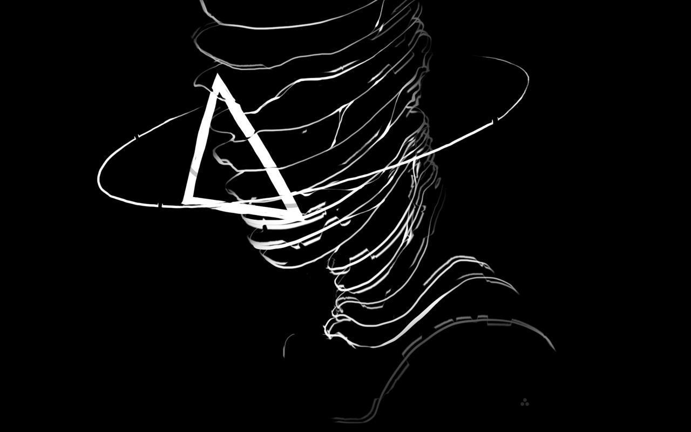
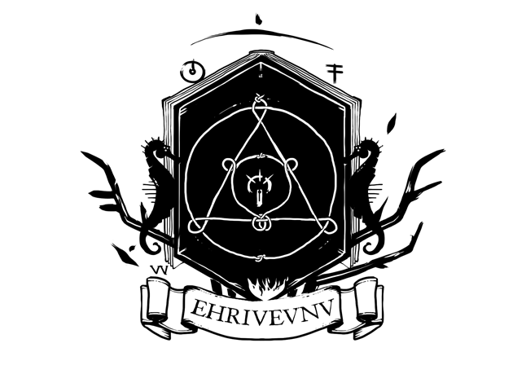

Oscean is a wiki engine.
Oscean is written entirely in Uxntal(source), doing away with any dependencies beyond the thin emulation layer of the virtual machine. The assembler is written in the language it assembles and is bootstrapped from a minuscule binary seed, the text-editor used to create and edit the entries is also written in that same language.
- Uxn Repl, Manual.
- Rejoice Repl, Manual.
- Lisp Repl, Manual.
- Modal Repl, Manual.
- Thue Repl, Manual.
- Neur Repl, Manual.
Building
Reads a lexicon, diaries and html sources. Writes links, events and diaries to temporary files for each entry in the lexicon. It also finds broken links, orphaned pages and unreachable diary entries. Injest the generated files, and outputs the final html results.
src/ oscean.tal tables/ lexicon diary/ 00.tsv 01.tsv 02.tsv 03.tsv .. htm/ home.htm .. bin/ site/
Runes
Certain runes assign types to diary logs and lexicon terms:
20C09+000 ( event ) 20A12.906 ( unlog ) 3.webring ( img ) 4,orca zine ( txt ) 4;paper computer ( img+txt ) 4?sitemap ( unlink )
The generated files are accessible to screen-readers and terminal browsers, using no javascript, and a stylesheet of a mere 30 lines. The wiki and its related tools are generally used offline, so there are no offsite queries to critical resources.
The journal entries are catalogued in the Arvelie time format.

15R09— Rebuilt Oscean in Uxntal13T01— Rebuilt Oscean in C08D08— Rebuilt Oscean in Javascript02N09— Created Oscean in Ruby
incoming: riven arvelie about index styleguide events 2024 2021